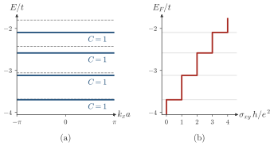

Page 2 of 13 of this session
4.3 From the Kubo formula to the Chern number, briefly
A Landau level is flat, so how can it carry a Hall current? We will see that the Hall conductivity is built from the wavefunctions only, and not from the energies. Each Landau level has a Chern number of magnitude one, so \(N\) filled levels give \(|\sigma_{xy}|=Ne^2/h\).
We derived this result in full in Section 3.5, so here we only recall the logic and check that it applies without changes. The Kubo formula is linear response, so it is first order in the applied field, and its sum over states has the form of a second-order perturbation expression. It writes the transverse conductivity as a sum over all pairs of occupied and empty bands, where each term has matrix elements of \(\partial H/\partial k_x\) and \(\partial H/\partial k_y\) divided by energy differences.
There is an identity that relates \(\partial H/\partial k\) to the derivative of the eigenstates, which we obtain when we differentiate the eigenvalue equation \(H(\mathbf{k})|u_\mathbf{k}\rangle = \varepsilon(\mathbf{k})|u_\mathbf{k}\rangle\) with respect to \(\mathbf{k}\). With this identity every explicit energy denominator cancels, and the result depends only on the wavefunctions, through the Berry connection \(\mathbf{A}(\mathbf{k}) = i\langle u_\mathbf{k}|\nabla_\mathbf{k}|u_\mathbf{k}\rangle\) and its curl, the Berry curvature \(\Omega(\mathbf{k}) = \nabla_\mathbf{k}\times\mathbf{A}(\mathbf{k})\). The Brillouin zone is a closed, compact manifold, which is a torus, and when we sum over occupied bands and integrate over it we obtain an integer,
\[\sigma_{xy} = \frac{e^2}{h}\, C, \qquad C = \frac{1}{2\pi}\sum_{n\,\text{occ.}}\int_{\text{BZ}} \Omega_n(\mathbf{k})\, d^2k \in \mathbb{Z}, \tag{4.1}\]
which is the Chern number of the occupied bands. This is the same statement as (3.4). The Hall conductance is not only quantized, it is also a topological invariant, so it does not change under any smooth deformation of the Hamiltonian that does not close the bulk gap. What is new in this session is not this derivation. It is the band structure that we use, the Landau levels of a magnetic field. It is also everything that follows when we ask how the many-body ground state of a partially filled Landau level looks.
4.4 Landau levels as Chern-number-one flat bands
A two-dimensional electron gas in a perpendicular magnetic field develops a set of completely flat bands, which is the third type of dispersion of Section 2.10. These are the Landau levels, with index \(n=0,1,2,\dots\). In this context “flat” means without dispersion, so the energy does not depend on momentum at all, and we will derive the reason for this in Section 4.9. Even if they have no dispersion, each Landau level has a finite Chern number, with the smallest nonzero magnitude, \(|C_n|=1\). For the charge \(+e\) of these pages in the field \(B\hat z\), each level has \(C_n=-1\) with the \(\Omega\) of Session 3, and for an electron in the same field \(C_n=+1\).
If the chemical potential is between the \(N\)-th and the \((N+1)\)-th Landau level, the total Chern number of the occupied bands is the sum of \(N\) contributions of the same sign and of magnitude \(1\),
\[|C_{\text{tot}}| = \Big|\sum_{n=0}^{N-1} C_n\Big| = N \quad\Longrightarrow\quad |\sigma_{xy}| = N\,\frac{e^2}{h}, \tag{4.2}\]
which is an integer that counts the number of filled Landau levels.
This is the integer quantum Hall effect. It is a state built only from flat bands without dispersion, and still its Hall conductance is an exact integer multiple of \(e^2/h\), with a sharp quantization.

Schematic 4.4 checks (4.2) with pyqula on a square lattice, whose band bottom plays the role of the free electron gas.

g1_landau_levels_square.py
h.add_orbital_magnetic_field(1/20). The vector potential of pyqula is along \(x\), so the bands are drawn against \(k_x\), which plays the role of the \(k_y\) of the Landau gauge of Section 4.8. In (a) the four lowest bands are flat, and the dashed lines are the Landau levels of the continuum, \(-4t+\hbar\omega_c(n+\tfrac12)\) with \(\hbar\omega_c=4\pi t/20=0.63\,t\). The bands sit below the dashed lines, by \(0.01\,t\) for the lowest and by \(0.30\,t\), about half a spacing, for the fourth, which is the effect of the lattice that we see in Section 4.11. In (b) the Hall conductivity, in units of \(e^2/h\), is the Chern number of the filled bands that pyqula gives with the Fermi energy \(E_F\) in each gap. It grows by one at each band, so pyqula gives \(C=1\) for each band. A positive flux of pyqula is the field along \(+z\) for an electron. For the charge \(+e\) of Section 4.9 it is the field along \(-z\), and the flux \(-1/20\), which is the field \(B\hat z\) of Section 4.8, gives \(C=-1\) for each band. Look at the steps of (b), which sit at the energies of the flat bands of (a). The script also computes the fluxes \(1/10\) and \(1/40\).A Landau level has no dispersion, so every state has zero group velocity. The Chern number of a band is
\[C=\frac{1}{2\pi}\int_{\text{BZ}}\Omega(\mathbf{k})\,d^2k,\qquad \Omega=-2\,\mathrm{Im}\,\langle\partial_{k_x}u|\partial_{k_y}u\rangle.\]
How can such a flat band have \(C\neq0\)?
Show the answers
- A. ✗ False
This is false. The integral uses the bulk states \(|u(\mathbf{k})\rangle\) of a periodic system, with no edge at all. The edge states are a consequence, since the number of chiral modes at one edge equals the \(|C|\) of all the filled bands together.
- B. ✓ True
This is true. The formula has only the states \(|u(\mathbf{k})\rangle\) and no energy, since the energies cancel when the Kubo formula is written in this form. A flat band can still have wavefunctions that twist across the Brillouin zone, and this twist is counted by \(C\).
- C. ✗ False
This is false. If \(C\) were zero, a filled Landau level would give \(\sigma_{xy}=0\). The measured plateau of a filled lowest Landau level is \(e^2/h\), which needs \(|C|=1\).
The chemical potential is in the gap between the third and the fourth Landau level. What is \(|\sigma_{xy}|\)?
Show the answers
- A. ✗ False
This is false. The value \(e^2/h\) is the plateau with only the lowest Landau level filled. Three filled levels give three times this value.
- B. ✓ True
This is true. Three Landau levels are filled, each with \(|C|=1\) and with the same sign. By (4.2) the total is \(|C|=3\), and \(|\sigma_{xy}|=3e^2/h\).
\[|C_{\text{tot}}| = \Big|\sum_{n=0}^{N-1} C_n\Big| = N \quad\Longrightarrow\quad |\sigma_{xy}| = N\,\frac{e^2}{h}, \tag{4.2}\]
- C. ✗ False
This is false. The fourth level is above the chemical potential and it is empty, so it adds nothing. The plateau at \(4e^2/h\) needs the chemical potential in the gap above the fourth level.
Each picture is the Hall conductivity of a square lattice against the Fermi energy \(E_F\). The three lattices are in different magnetic fields. Near the bottom of the band the levels are spaced by roughly
\[\hbar\omega_c=\frac{\hbar eB}{m},\qquad m=\frac{\hbar^2}{2ta^2}.\]
Here \(m\) is the band mass, \(t\) the hopping and \(a\) the lattice constant. Which lattice is in the strongest field?
Show the answers
- A. ✗ False
This is false. The plateau at \(\sigma_{xy}=e^2/h\) is \(0.58\,t\) wide, and this lattice has the flux \(1/20\) of a flux quantum per plaquette. Another staircase has wider plateaus, so a stronger field.
- B. ✓ True
This is true. Its plateaus are the widest, and the plateau at \(\sigma_{xy}=e^2/h\) is \(1.07\,t\) wide. Close to the bottom of the band the width of a plateau is roughly \(\hbar\omega_c\), which grows linearly with \(B\). This lattice has the flux \(1/10\) per plaquette, the largest of the three. The lattice makes the plateau a bit narrower than the \(4\pi t/10=1.26\,t\) of the continuum.
- C. ✗ False
This is false. Its plateaus are the narrowest, and the plateau at \(\sigma_{xy}=e^2/h\) is \(0.30\,t\) wide, so the field is the weakest, the flux \(1/40\) per plaquette. More levels fit below \(E_F=-2t\), since they are closer to each other.
Each jump is \(e^2/h\) for the three fields, so only the width of the plateaus tells the field. The pictures are computed with pyqula on the square lattice with the hopping \(t\), and with the sign of pyqula, whose positive flux is the field along \(+z\) for an electron.
A large sample is in a quantum Hall state with \(N\) filled Landau levels, and each level holds \(eB/h\) states per unit area. We draw a circle of radius \(R\) inside it, far from its edges. The field grows slowly, so the chemical potential stays in the gap and the levels stay filled. Faraday’s law gives an electric field along the circle, and the Hall response to this field carries charge across the circle, from the region outside it. Show that the charge balance inside the circle needs \(|\sigma_{xy}|=e\,\partial n/\partial B=Ne^2/h\), where \(n\) is the density of electrons.
Solution
The flux through the circle is \(\Phi=\pi R^2B\), and Faraday’s law gives the electric field along the circle,
\[2\pi R\,|E_\varphi| = \Big|\frac{d\Phi}{dt}\Big| = \pi R^2\Big|\frac{dB}{dt}\Big|, \qquad |E_\varphi|=\frac{R}{2}\Big|\frac{dB}{dt}\Big|.\]
The chemical potential is in the gap, so \(\sigma_{xx}=0\) and the only current across the circle is the Hall current, along the radius, with \(|j_r|=|\sigma_{xy}|\,|E_\varphi|\). The charge inside the circle then changes at the rate
\[\Big|\frac{dQ}{dt}\Big| = 2\pi R\,|j_r| = \pi R^2\,|\sigma_{xy}|\,\Big|\frac{dB}{dt}\Big|.\]
On the other side, the levels stay filled, so the circle holds the charge \(Q=e\,n\,\pi R^2\) with \(n=NeB/h\), and
\[\Big|\frac{dQ}{dt}\Big| = \pi R^2\,e\,\frac{\partial n}{\partial B}\,\Big|\frac{dB}{dt}\Big| = \pi R^2\,\frac{Ne^2}{h}\,\Big|\frac{dB}{dt}\Big|.\]
The two rates are the same charge, so \(|\sigma_{xy}|=e\,\partial n/\partial B=Ne^2/h\), and for \(N=3\) this is \(3e^2/h\).
The argument uses only the number of states of a level, \(eB/h\) per unit area, and not the shape of the levels or their wavefunctions. So it gives the same integer \(N\) as (4.2) by counting states. In a Hall bar with \(N=3\) it is the plateau at \(h/3e^2=8.60\) k\(\Omega\).
Try it. Run the cell for the three fields. The dots of the bulk bands form horizontal lines, which means that the Landau levels have no dispersion. The lines move apart when you increase B, as expected from the growth of the cyclotron energy with the field.
- In Section 5.14 the Chern number of the BdG bands separates an s-wave from a chiral p-wave superconductor with the same gap.
- In Section 6.16 the same integral of the Berry curvature gives the Chern number (6.10) of a magnon band.
- In Section 7.1 a partially filled flat band with a Chern number, the fractional Chern insulator, is an example where mean-field theory fails.
- In Section 10.6 the Chern number separates phases that no local order parameter can separate.